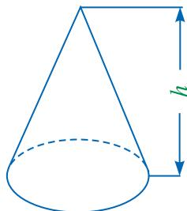

cdn.jsdelivr.net，然后刷新本页。
一个分数除以另一个分数，是将除数的分子与分母颠倒位置后，与被除数相乘．如：
$$ \frac{2}{3} \div \frac{7}{3} = \frac{2}{3} \times \frac{3}{7} = \frac{2}{7}. $$请类比分数的除法运算，思考分式 $\frac{A}{B}$ 除以 $\frac{C}{D}$ 的结果。
分式的除法法则：分式除以分式，把除式的分子与分母颠倒位置后，与被除式相乘。
$$ \frac{A}{B} \div \frac{C}{D} = \frac{A}{B} \cdot \frac{D}{C} = \frac{A \cdot D}{B \cdot C}. $$由此可知，分式的除法运算是转化为分式的乘法运算进行的。
计算下列各式：
(1) $\frac{5y^2}{2x} \div \frac{y}{4x}$；
(2) $\frac{2x - 6}{x - 2} \div (x - 3)$；
(3) $\frac{a^2 + 3ab}{a^2 + 2ab + b^2} \div \frac{a + 3b}{a^2 - b^2}$。
解：
(1)
$$ \frac{5y^2}{2x} \div \frac{y}{4x} = \frac{5y^2}{2x} \cdot \frac{4x}{y} = 10y. $$(2)
$$ \begin{aligned} \frac{2x - 6}{x - 2} \div (x - 3) &= \frac{2x - 6}{x - 2} \cdot \frac{1}{x - 3} \\ &= \frac{2(x - 3)}{(x - 2)(x - 3)} \\ &= \frac{2}{x - 2}. \end{aligned} $$(3)
$$ \begin{aligned} \frac{a^2 + 3ab}{a^2 + 2ab + b^2} \div \frac{a + 3b}{a^2 - b^2} &= \frac{a^2 + 3ab}{a^2 + 2ab + b^2} \cdot \frac{a^2 - b^2}{a + 3b} \\ &= \frac{a(a + 3b)(a + b)(a - b)}{(a + b)^2(a + 3b)} \\ &= \frac{a(a - b)}{a + b}. \end{aligned} $$八年级(1)班的同学在体育课上进行长跑训练，小芳跑完 $1000\mathrm{~m}$ 用了 $t\mathrm{~s}$，小雯用相同的时间跑完了 $800\mathrm{~m}$。这次训练，小芳的平均速度是小雯平均速度的多少倍？
解：小芳的平均速度为 $\frac{1000}{t}\mathrm{~m/s}$，小雯的平均速度为 $\frac{800}{t}\mathrm{~m/s}$。
$$ \frac{1000}{t} \div \frac{800}{t} = \frac{1000}{t} \times \frac{t}{800} = \frac{1000}{800} = 1.25. $$答：这次训练，小芳的平均速度是小雯平均速度的 1.25 倍。
1. 计算下列各式：
(1) $\frac{2a}{3m^2n} \div \frac{a}{6m}$；
(2) $\frac{2 - x}{x + 1} \div (2x - x^2)$；
(3) $\frac{a^2 - b^2}{a^2 + 2ab} \div \frac{(a + b)^2}{a + 2b}$。
2. 已知 $a^2 - a = 3$，求
$$ \frac{a - 1}{a + 2} \cdot \frac{a^2 - 4}{a^2 - 2a + 1} \div \frac{1}{a^2 - 1} $$的值。
1. 计算下列各式：
(1) $\frac{a^2}{b^2} \div \frac{a^2}{2b}$；
(2) $\frac{x-y}{xy} \div (x-y)$；
(3) $(x-2) \div \frac{x^2-4x+4}{x+2}$；
(4) $\frac{a-2}{a^2+8a+16} \div \frac{a^2-4}{a+4}$。
2. 如图，圆锥的体积 $V = \frac{1}{3}Sh$。其中，$S$ 为圆锥的底面积，$h$ 为圆锥的高。
（1）当圆锥的高扩大到原来的 $a$ 倍而底面积不变时，变化后的圆锥的体积是原来的多少倍？

（2）当圆锥的底面积扩大到原来的 $a$ 倍而体积不变时，变化后的圆锥的高是原来的几分之一？
3. 计算下列各式：
(1) $\frac{a^2-1}{a^2+4a+4} \div (a+1) \cdot \frac{(a+1)(a+2)}{a-1}$；
(2) $(xy-x^2) \div \frac{x^2-2xy+y^2}{xy} \cdot \frac{x-y}{x^2}$。
4. 已知 $x = 3, y = -4$，求
$$ \frac{x^2}{(x-y)^2} \cdot \frac{x^3 + xy^2 - 2x^2y}{x^2} \div \frac{y^2 - x^2}{xy + y^2} $$的值。
5. 有这样一道题：“先化简，再求值：
$$ \frac{(x-y)^2}{x^2-y^2} \cdot \frac{x^2+xy}{x-y} \div x^3 $$其中，$x=-3$。”小杰同学在做这道题时，错将 $x=-3$ 看成 $x=3$，但他的答案是正确的。你能找出其中的原因吗？